一般クエスト Lv1〜49

| 冒険家協会 | |
|---|---|
冒険家協会内部の北東側にいる雑貨商人に会ってみよう。 雑貨商人に会いました。次は、協会中央にいる協会専属魔法師に会ってみよう。 協会専属魔法師に会いました。次は、近くにいる協会テレポーターに会ってみよう。 協会テレポーターに会いました。次は、協会の南西側にいるギルド連合代理人に会ってみよう。 ギルド連合代理人に会いました。次は、協会中央にいる協会事務官に会ってみよう。 冒険家協会をぐるっと見て回った。協会長シュルトのところに戻ろう。 |
|
| 受諾場所 | 冒険家協会ブルンネンシュティグ本部 協会長シュルト（21.17） |
| 受諾条件 | Lv1 キャンセル不可 |
| 報酬 | 経験値1500 冒険家協会の羅針盤‘ブルンネンシュティグ’10個 |
| 冒険家協会ブルンネンシュティグ本部 | 連作クエスト 冒険家協会 → 冒険家の心得 → 1つ目のテスト → 2つ目のテスト 雑貨商人（40.26）へ 協会専属魔法師（26.43）へ 協会テレポーター（27.44）へ ギルド連合代理人（9.43）へ 協会事務官（18.32）へ 協会長シュルトへ |
| 協会クエスト[討伐任務] | |||||
|---|---|---|---|---|---|
モンスター100体を退治して、人々の安全を守ろう。対象は、自分のレベルとレベル50以上差のないモンスターだ。 人々を襲うモンスターたちを十分退治した。冒険家協会に戻って報酬をもらおう。 |
|||||
| 受諾場所 | 冒険家協会ブルンネンシュティグ本部 協会任務担当官（22.34） | ||||
| 受諾条件 | Lv1 1日1回繰り返し可 （[討伐任務]か[伝達任務]のどちらか一方のみ） | ||||
| 報酬 |
|
||||
| 冒険家協会ブルンネンシュティグ本部 | 本体Lv-49以上のモンスターを100匹倒す 協会任務担当官へ  |
||||
| 協会クエスト[伝達任務] | |||||
|---|---|---|---|---|---|
協会の極秘情報が書いてある書簡を受け取った。それぞれの場所で任務を遂行している協会秘密要員たちにこの書簡を渡そう。 書簡をすべて伝達した。冒険家協会に戻って協会任務担当官を会おう。 |
|||||
| 受諾場所 | 冒険家協会ブルンネンシュティグ本部 協会任務担当官（22.34） | ||||
| 受諾条件 | Lv1 1日1回繰り返し可 （[討伐任務]か[伝達任務]のどちらか一方のみ） | ||||
| 報酬 |
|
||||
| ガディウス大砂漠 / デフヒルズ北側 | 協会秘密要員（34.10）へ | ||||
| ファウンティンス・ハイランド | 協会秘密要員（12.19）へ | ||||
| スパインビーチ | 協会秘密要員（96.187）へ | ||||
| ナラダ平原 / ウエストスワンプ | 協会秘密要員（141.159）へ | ||||
| 冒険家協会ブルンネンシュティグ本部 | 協会任務担当官へ |
||||
| バインダーの怨恨 | |
|---|---|
ブルンネンシュティグ西側の地下墓場でバインダーを捜して安息を与えよう。 バインダーの骨の欠片をブルンネンシュティグのフローテックに届けよう。 |
|
| 受諾場所 | 古都ブルンネンシュティグ フローテック（26.168） |
| 受諾条件 | Lv1 |
| 報酬 | 経験値1万4000 8000G |
| 地下墓地 Ｂ１ | バインダー（Lv22）を倒す |
| 古都ブルンネンシュティグ | フローテックへ |
| 羽の収集 | |
|---|---|
ブルンネンシュティグの武器屋ワリドが、派手なさやを作る為に必要な鷲戦士の羽を街の東側の枯れた井戸から集めてこよう。 全て集めた羽 10個をブルンネンシュティグのワリドに届けよう。 |
|
| 受諾場所 | ワリドの武器店 ワリド（10.9） |
| 受諾条件 | Lv1 剣士/戦士 繰り返し可 |
| 報酬 | 経験値1000 ランダムオプションバスタードソード |
| 枯れ井戸 | 鷲戦士（Lv8）を倒す |
| ワリドの武器店 | ワリドへ |


| EMの話を集めよう | |||||||
|---|---|---|---|---|---|---|---|
冒険家の八つ当たり対象になっていた練習用かかしたちが動いた。かかしの長はEMたちの実態を知る為に、イベントダンジョンでEMモンスターを退治し、彼らの話を集めてくるようにお願いしてきた。 EMのコメント集の完成率を40パーセント以上にしてみよう。 |
|||||||
| 受諾場所 | 古都ブルンネンシュティグ かかしの長（52.138） | ||||||
| 受諾条件 | Lv1 期間限定 アップデート特別記念イベント 8周年記念EMハンティングイベント EMハンティングイベント |
||||||
| 報酬 |
|
||||||
| EMの隠れ家 | 連作クエスト EMの話を集めよう → 選択の岐路 → 疑問のメモ 4人以上のパーティーを組み、EMマロン、EMアース、EMストロベリー、EMぴゅーい、EMファルコン、EM林檎、EMスイカ、EMエリンギ（Lv100）を倒す。黒落ち可。 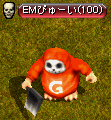 EMコメント集[ページ 2,5,9,13〜14,17,20〜21,24,27]は、パーティーメンバーがEMを倒すと全員入手できる。 右クリック→使うを選択→EMコメント集をクリックして保管する。 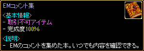 EMコメント集の内容 完成度40％以上にして、かかし委員会（155.188）へ
 アップデート特別記念イベント EMハンティングイベント いいものから出現するアイテム一覧 改良型 フルヒールポーション5個 改良型 フルチャージポーション5個 万病 刃油（最高補正） 発火石10個 断熱石10個 ピエンドルガン 必勝バンダナ ワイドロープ ワッチガード ジャンクケース セーフケージ 千里靴 ポジティブシール [攻撃速度Lv2] [攻撃速度Lv2] 原石   8周年記念EMハンティングイベント アニバーサリーBoxから出現するアイテム一覧 改良型 フルヒールポーション8個 改良型 フルチャージポーション8個 万病8個 刃油（最高補正） ランディスの幸運くじ8個 アメジスティ ベイナビル お父さんの手 ドレイクハスク サンダープレート スピリットオブコマーシャル [運Lv8] 百八煩悩 [運Lv8] 八色鳥 [攻撃速度Lv2] [攻撃速度Lv2] 原石 |
||||||

| 選択の岐路 | |||||||
|---|---|---|---|---|---|---|---|
あなたは選択の岐路に立っている！プロデューサーを泣かせて涙を取ってくるか？それともRED STONEの未来のためインセクトを退治するか？ プロデューサーの涙10個を集めるか、インセクト50匹を倒すか。どちらかを達成するとクエストが完了されます 自分の選択した任務を完了した！イベントダンジョンのかかし委員会に渡し、報酬をもらおう。 |
|||||||
| 受諾場所 | 古都ブルンネンシュティグ かかしの長（52.138） | ||||||
| 受諾条件 | Lv1 期間限定 1日1回繰り返し可 アップデート特別記念イベント 8周年記念EMハンティングイベント EMハンティングイベント |
||||||
| 報酬 |
|
||||||
| EMの隠れ家 | 連作クエスト EMの話を集めよう → 選択の岐路 → 疑問のメモ 4人以上のパーティーを組み、インセクト（Lv120）を50匹倒す、 またはプロデューサの魂（Lv120）を倒してプロデューサーの涙を10個集める。 黒落ち可、パーティーメンバーが倒した分もカウントされる。 かかし委員会（155.188）へ |
||||||
| 古都ブルンネンシュティグ | かかしの長へ 途中、EMを倒すとEMの手紙を入手できる。 かかしの長にEMの手紙を渡すと、EMコメント集と古代竜の心臓[E]をもらえる。 |
||||||
| 疑問のメモ | |
|---|---|
かかしの長は、プロデューサーが書いたと言われる疑問のメモについて教えてくれた。 どんな内容が書かれているのか分からない以上、こっそり持ってきて欲しいらしい。 数はいくつでも構わないということだ。 |
|
| 受諾場所 | 古都ブルンネンシュティグ かかしの長（52.138） |
| 受諾条件 | Lv1 期間限定 繰り返し可 アップデート特別記念イベント 8周年記念EMハンティングイベント EMハンティングイベント |
| 報酬 | いいもの（アニバーサリーBox） 古代竜の心臓[E] |
| EMの隠れ家 | 連作クエスト EMの話を集めよう → 選択の岐路 → 疑問のメモ 4人以上のパーティーを組み、プロデューサの魂（Lv120）を倒し疑問のメモを集める。 黒落ち可。EMコメント集を持っていないと入手できない。 かかし委員会（155.188）へ |
| 古都ブルンネンシュティグ | かかしの長へ、疑問のメモを渡すといいもの（アニバーサリーBox）をもらえる。 （EMハンティングイベントでは古代竜の心臓[E]をもらえる） 途中、EMを倒すとEMの手紙を入手できる。 かかしの長にEMの手紙を渡すと、EMコメント集と古代竜の心臓[E]をもらえる。 |
| EMたちの話を聞こう | |||||||
|---|---|---|---|---|---|---|---|
冒険家から毎日殴られるだけの練習用かかしたちが動いた。かかしの長はEMたちの実態を明かすため、イベントダンジョンでEMモンスターを退治し、彼らの話を収集してほしいと言っている。 EMのコメント集【2】の完成率を30パーセント以上にしてみよう。 |
|||||||
| 受諾場所 | 古都ブルンネンシュティグ かかしの長（52.138） | ||||||
| 受諾条件 | Lv1 期間限定 EMハンティングイベント（2016.4） （2016.5） （2016.11） | ||||||
| 報酬 |
|
||||||
| EMの隠れ家 | 連作クエスト EMたちの話を聞こう → 選択の岐路 → 疑問のメモ 4人以上のパーティーを組み、EMDJ、EMぴゅーい、EMウルフマン、EMマロン、EMエリンギ、EMスイカ、EMストロベリー、EM豆たろう（Lv100）を倒す。黒落ち可。 EMのコメント集【2】は、パーティーメンバーがEMを倒すと全員入手できる。 右クリック→使うを選択→EMのコメント集【2】をクリックして保管する。 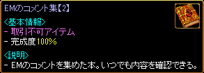 EMのコメント集【2】の内容 完成度30％以上にして、かかし委員会（155.188）へ いいものから出現するアイテム一覧 改良型 フルヒールポーション5個 改良型 フルチャージポーション5個 万病 刃油（最高補正） 発火石10個 断熱石10個 ピエンドルガン 必勝バンダナ ワイドロープ ワッチガード ジャンクケース セーフケージ 千里靴 ポジティブシール [攻撃速度Lv2] [攻撃速度Lv2] 原石 |
||||||
| 選択の岐路 | |||||||
|---|---|---|---|---|---|---|---|
あなたは選択の岐路に立っている！プロデューサーを泣かせて涙を取ってくるか？それともRED STONEの未来のためインセクトを退治するか？ プロデューサーの涙10個を集めるか、インセクト50匹を倒すか。どちらかを達成するとクエストが完了されます 自分の選択した任務を完了した！イベントダンジョンのかかし委員会に渡し、報酬をもらおう。 |
|||||||
| 受諾場所 | 古都ブルンネンシュティグ かかしの長（52.138） | ||||||
| 受諾条件 | Lv1 期間限定 1日1回繰り返し可 EMハンティングイベント（2016.4） （2016.5） （2016.11） |
||||||
| 報酬 |
|
||||||
| EMの隠れ家 | 連作クエスト EMたちの話を聞こう → 選択の岐路 → 疑問のメモ 4人以上のパーティーを組み、インセクト（Lv120）を50匹倒す、 またはプロデューサの魂（Lv120）を倒してプロデューサーの涙を10個集める。 黒落ち可、パーティーメンバーが倒した分もカウントされる。 かかし委員会（155.188）へ |
||||||
| 古都ブルンネンシュティグ | かかしの長へ 途中、EMを倒すとEMの手紙を入手できる。 かかしの長にEMの手紙を渡すと、EMのコメント集【2】と古代竜の心臓[E]をもらえる。 |
||||||
| 疑問のメモ | |
|---|---|
かかしの長は、プロデューサーが書いたと言われる疑問のメモについて教えてくれた。 どんな内容が書かれているのか分からない以上、こっそり持ってきて欲しいらしい。 数はいくつでも構わないということだ。 |
|
| 受諾場所 | 古都ブルンネンシュティグ かかしの長（52.138） |
| 受諾条件 | Lv1 期間限定 繰り返し可 EMハンティングイベント（2016.4） （2016.5） （2016.11） |
| 報酬 | 古代竜の心臓[E] |
| EMの隠れ家 | 連作クエスト EMたちの話を聞こう → 選択の岐路 → 疑問のメモ 4人以上のパーティーを組み、プロデューサの魂（Lv120）を倒し疑問のメモを集める。 黒落ち可。EMのコメント集【2】を持っていないと入手できない。 かかし委員会（155.188）へ |
| 古都ブルンネンシュティグ | かかしの長へ、疑問のメモを渡すと古代竜の心臓[E]をもらえる。 途中、EMを倒すとEMの手紙を入手できる。 かかしの長にEMの手紙を渡すと、EMのコメント集【2】と古代竜の心臓[E]をもらえる。 |
| EMの本音を調べよう | |||||||
|---|---|---|---|---|---|---|---|
冒険家の八つ当たり対象になっていた練習用かかしたちが動いた。かかしの長はEMたちの本音を知る為に、イベントダンジョンでEMモンスターを退治し、彼らの話を集めてくるようにお願いしてきた。 EMのコメント集の完成率を40パーセント以上にしてみよう。 |
|||||||
| 受諾場所 | 古都ブルンネンシュティグ かかしの長（52.138） | ||||||
| 受諾条件 | Lv1 期間限定 EMハンティングイベント（2017.4） | ||||||
| 報酬 |
|
||||||
| EMの隠れ家 | 連作クエスト EMの本音を調べよう → 選択の岐路 → 疑問のメモ 4人以上のパーティーを組み、EM豆たろう、EMジャックアマノ、EMスイカ、EMウィッチ、EMストロベリー、EMひじき、EMぴゅーい、EMマロン（Lv100）を倒す。黒落ち可。 EMのコメント集【3】は、パーティーメンバーがEMを倒すと全員入手できる。 右クリック→使うを選択→EMのコメント集【3】をクリックして保管する。  EMのコメント集【3】の内容 EMのコメント集【3】の内容完成度40％以上にして、かかし委員会（155.188）へ |
||||||
| 選択の岐路 | |||||||
|---|---|---|---|---|---|---|---|
あなたは選択の岐路に立っている！プロデューサーを泣かせて涙を取ってくるか？それともRED STONEの未来のためインセクトを退治するか？ プロデューサーの涙10個を集めるか、インセクト50匹を倒すか。どちらかを達成するとクエストが完了されます 自分の選択した任務を完了した！イベントダンジョンのかかし委員会に渡し、報酬をもらおう。 |
|||||||
| 受諾場所 | 古都ブルンネンシュティグ かかしの長（52.138） | ||||||
| 受諾条件 | Lv1 期間限定 1日1回繰り返し可 EMハンティングイベント（2017.4） | ||||||
| 報酬 |
|
||||||
| EMの隠れ家 | 連作クエスト EMの本音を調べよう → 選択の岐路 → 疑問のメモ 4人以上のパーティーを組み、インセクト（Lv120）を50匹倒す、 またはプロデューサの魂（Lv120）を倒してプロデューサーの涙を10個集める。 黒落ち可、パーティーメンバーが倒した分もカウントされる。 かかし委員会（155.188）へ |
||||||
| 古都ブルンネンシュティグ | かかしの長へ 途中、EMを倒すとEMの手紙を入手できる。 かかしの長にEMの手紙を渡すと、EMのコメント集【3】と古代竜の心臓[E]をもらえる。 |
||||||
| 疑問のメモ | |
|---|---|
かかしの長は、プロデューサーが書いたと言われる疑問のメモについて教えてくれた。 どんな内容が書かれているのか分からない以上、こっそり持ってきて欲しいらしい。 数はいくつでも構わないということだ。 |
|
| 受諾場所 | 古都ブルンネンシュティグ かかしの長（52.138） |
| 受諾条件 | Lv1 期間限定 繰り返し可 EMハンティングイベント（2017.4） |
| 報酬 | 古代竜の心臓[E] |
| EMの隠れ家 | 連作クエスト EMの本音を調べよう → 選択の岐路 → 疑問のメモ 4人以上のパーティーを組み、プロデューサの魂（Lv120）を倒し疑問のメモを集める。 黒落ち可。EMのコメント集【3】を持っていないと入手できない。 かかし委員会（155.188）へ |
| 古都ブルンネンシュティグ | かかしの長へ、疑問のメモを渡すと古代竜の心臓[E]をもらえる。 途中、EMを倒すとEMの手紙を入手できる。 かかしの長にEMの手紙を渡すと、EMのコメント集【3】と古代竜の心臓[E]をもらえる。 |
| ジプシーたちの祭り | ||||||||||||||||||||||||||||||||||||||||||||||||||||||||||||||||||||||||||||||||||||||||||||||||||||||||||||||||||||||||||||||||||||||||||||||||||||||||||||||||||||||
|---|---|---|---|---|---|---|---|---|---|---|---|---|---|---|---|---|---|---|---|---|---|---|---|---|---|---|---|---|---|---|---|---|---|---|---|---|---|---|---|---|---|---|---|---|---|---|---|---|---|---|---|---|---|---|---|---|---|---|---|---|---|---|---|---|---|---|---|---|---|---|---|---|---|---|---|---|---|---|---|---|---|---|---|---|---|---|---|---|---|---|---|---|---|---|---|---|---|---|---|---|---|---|---|---|---|---|---|---|---|---|---|---|---|---|---|---|---|---|---|---|---|---|---|---|---|---|---|---|---|---|---|---|---|---|---|---|---|---|---|---|---|---|---|---|---|---|---|---|---|---|---|---|---|---|---|---|---|---|---|---|---|---|---|---|---|---|
ジプシーのレモラから、ジプシーたちのイベントであるクイズイベントに誘われた。レモラが出す問題は10つで、全ての問題に正解するとプレゼントがもらえる。レモラの問題を全部正解してプレゼントをもらおう。 |
||||||||||||||||||||||||||||||||||||||||||||||||||||||||||||||||||||||||||||||||||||||||||||||||||||||||||||||||||||||||||||||||||||||||||||||||||||||||||||||||||||||
| 受諾場所 | 古都ブルンネンシュティグ ジプシーのレモラ（99.116） | |||||||||||||||||||||||||||||||||||||||||||||||||||||||||||||||||||||||||||||||||||||||||||||||||||||||||||||||||||||||||||||||||||||||||||||||||||||||||||||||||||||
| 受諾条件 | Lv1 期間限定 ジプシーたちのお祭りイベント |
|||||||||||||||||||||||||||||||||||||||||||||||||||||||||||||||||||||||||||||||||||||||||||||||||||||||||||||||||||||||||||||||||||||||||||||||||||||||||||||||||||||
| 報酬 | ジプシーの宝箱 | |||||||||||||||||||||||||||||||||||||||||||||||||||||||||||||||||||||||||||||||||||||||||||||||||||||||||||||||||||||||||||||||||||||||||||||||||||||||||||||||||||||
| 古都ブルンネンシュティグ | 5パターンの問題からランダムで1パターン10問が出題される。 間違えた場合は再度、挑戦可能。全問正解するとジプシーの宝箱をもらえる。 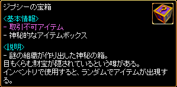 ジプシーの宝箱出現アイテム一例 一筆入魂 冬将軍 音速突破 Rank8-EX カーネーションモップ Rank9-EX メイドスカート型モップ Rank9-EX ウサギの尻尾ハタキ Rank10-EX 魔女のほうき Rank10-EX 竹ぼうき 神秘の石のかけら 20個 タートル召喚状簡易版 10個 リスポケットベル簡易版 10個 神々の霊薬 万病治療薬 フェニックスの灰 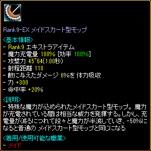
|
|||||||||||||||||||||||||||||||||||||||||||||||||||||||||||||||||||||||||||||||||||||||||||||||||||||||||||||||||||||||||||||||||||||||||||||||||||||||||||||||||||||
| ファミまん奪還大作戦！ | ||||||||||||||||||||||||||||||||||||||||||||
|---|---|---|---|---|---|---|---|---|---|---|---|---|---|---|---|---|---|---|---|---|---|---|---|---|---|---|---|---|---|---|---|---|---|---|---|---|---|---|---|---|---|---|---|---|
古都ブルンネンシュティグの三ツ星シェフザンサイアンが一生懸命料理したファミまんを盗まれたと言う。痕跡から見るにモンスターの仕業に違いない。モンスター達からファミまんを取り返してザンサイアンに持っていこう！ |
||||||||||||||||||||||||||||||||||||||||||||
| 受諾場所 | 古都ブルンネンシュティグ ザンサイアン（65.113） | |||||||||||||||||||||||||||||||||||||||||||
| 受諾条件 | Lv1 期間限定 ファミまん奪還大作戦イベント |
|||||||||||||||||||||||||||||||||||||||||||
| 報酬 | 特製ファミまん 特製カレーファミまん 特製ピザファミまん 三ツ星シェフBOX | |||||||||||||||||||||||||||||||||||||||||||
| 古都ブルンネンシュティグ | 本体Lv-100以上のモンスターを倒してファミまん、ピザファミまん、カレーファミまん、フェアリーハーブを集める。 ザンサイアンへ ?特製ファミまんを下さい。 ?特製ピザファミまんを下さい。 ?特製カレーファミまんを下さい。 ?三ツ星シェフBOXを下さい。
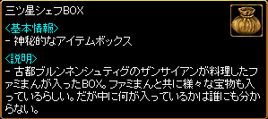 三ツ星シェフBOXから出現するアイテム 刻印済みスティングララバイ 刻印済みシャークフィン 儚い希望の指輪 熱血の指輪 高級ファミまん 高級カレーファミまん 高級ピザファミまん 金のエンチャント文書（取引不可） 魔法のボンド[取引不可] 古代竜の心臓[E]（取引不可） クロネの宝石箱 クロネの書類ケース  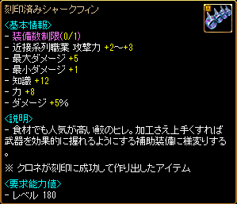   |
|||||||||||||||||||||||||||||||||||||||||||
| かかし印の古都納豆奪還大作戦！ | ||||||||||||||||||||||||||||||||||||||||||||
|---|---|---|---|---|---|---|---|---|---|---|---|---|---|---|---|---|---|---|---|---|---|---|---|---|---|---|---|---|---|---|---|---|---|---|---|---|---|---|---|---|---|---|---|---|
古都ブルンネンシュティグの三ツ星シェフザンサイアンが一生懸命作った、かかし印の古都納豆を盗まれたという。痕跡から見るにモンスターの仕業に違いない。モンスターから納豆を取り戻し、ザンサイアンに返してあげよう！ |
||||||||||||||||||||||||||||||||||||||||||||
| 受諾場所 | 古都ブルンネンシュティグ ザンサイアン（65.113） | |||||||||||||||||||||||||||||||||||||||||||
| 受諾条件 | Lv1 期間限定 かかし印の古都納豆奪還大作戦イベント |
|||||||||||||||||||||||||||||||||||||||||||
| 報酬 | かかし印の古都納豆[小粒・銀] かかし印の古都納豆[大粒・銀] かかし印の古都納豆[ひきわり・銀] 三ツ星シェフBOX |
|||||||||||||||||||||||||||||||||||||||||||
| 古都ブルンネンシュティグ | 本体Lv-49以上のモンスターを倒してかかし印の古都納豆[小粒]、[大粒]、[ひきわり]、フェアリーハーブを集める。 ザンサイアンへ ?かかし印の古都納豆[小粒・銀]をください。 ?かかし印の古都納豆[大粒・銀]をください。 ?かかし印の古都納豆[ひきわり・銀]をください。 ?三ツ星シェフBOXをください。
 三ツ星シェフBOXから出現するアイテム 刻印済みスティングララバイ 刻印済みシャークフィン 儚い希望の指輪 熱血の指輪 10thAnniversaryリング かかし印の古都納豆[小粒・金] かかし印の古都納豆[大粒・金] かかし印の古都納豆[ひきわり・金] 金のエンチャント文書（取引不可） 魔法のボンド[取引不可] 古代竜の心臓[E]（取引不可） クロネの宝石箱 クロネの書類ケース 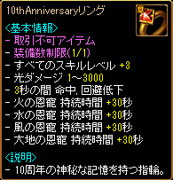 |
|||||||||||||||||||||||||||||||||||||||||||
| アーティーの年代記 1巻 | |||||||||||||||||||||||||||||||||||||||||||
|---|---|---|---|---|---|---|---|---|---|---|---|---|---|---|---|---|---|---|---|---|---|---|---|---|---|---|---|---|---|---|---|---|---|---|---|---|---|---|---|---|---|---|---|
小説家アーティーの質問を受けている途中、逃げてしまった。再び質問を受けるために、彼のもとに戻ろう。 小説家アーティーの質問に全部答えた。彼の判定を待った後、もう一度、話しかけてみよう。 |
|||||||||||||||||||||||||||||||||||||||||||
| 受諾場所 | 古都ブルンネンシュティグ 小説家アーティー（64.117） | ||||||||||||||||||||||||||||||||||||||||||
| 受諾条件 | Lv1 メインクエストChapter 1クリア 期間限定 クイズ！メインクエスト（2014年） クイズ！メインクエスト（2015年） |
||||||||||||||||||||||||||||||||||||||||||
| 報酬 | わくわくBOX 古代竜の心臓5個 風の羽10個 | ||||||||||||||||||||||||||||||||||||||||||
| 古都ブルンネンシュティグ | 問題A,Bのうちどちらかランダムで出題される。全問正解するとクリア。 間違えた場合は、再度受け直すことができる。 小説家アーティーへ
|
||||||||||||||||||||||||||||||||||||||||||

| アーティーの年代記 2巻 | |||||||||||||||||||||||||||||||||||||
|---|---|---|---|---|---|---|---|---|---|---|---|---|---|---|---|---|---|---|---|---|---|---|---|---|---|---|---|---|---|---|---|---|---|---|---|---|---|
小説家アーティーの質問を受けている途中、逃げてしまった。再び質問を受けるために、彼のもとに戻ろう。 小説家アーティーの質問に全部答えた。彼の判定を待った後、もう一度、話しかけてみよう。 |
|||||||||||||||||||||||||||||||||||||
| 受諾場所 | 古都ブルンネンシュティグ 小説家アーティー（64.117） | ||||||||||||||||||||||||||||||||||||
| 受諾条件 | Lv1 メインクエストChapter 2クリア 期間限定 クイズ！メインクエスト（2014年） クイズ！メインクエスト（2015年） |
||||||||||||||||||||||||||||||||||||
| 報酬 | わくわくBOX 古代竜の心臓5個 風の羽10個 ゴールド袋[100万] | ||||||||||||||||||||||||||||||||||||
| 古都ブルンネンシュティグ | 問題A,Bのうちどちらかランダムで出題される。全問正解するとクリア。 間違えた場合は、再度受け直すことができる。 小説家アーティーへ
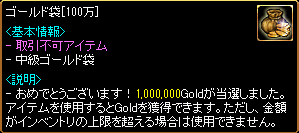 |
||||||||||||||||||||||||||||||||||||
| アーティーの年代記 3巻 | |||||||||||||||||||||||||||||||||||||
|---|---|---|---|---|---|---|---|---|---|---|---|---|---|---|---|---|---|---|---|---|---|---|---|---|---|---|---|---|---|---|---|---|---|---|---|---|---|
小説家アーティーの質問を受けている途中、逃げてしまった。再び質問を受けるために、彼のもとに戻ろう。 小説家アーティーの質問に全部答えた。彼の判定を待った後、もう一度、話しかけてみよう。 |
|||||||||||||||||||||||||||||||||||||
| 受諾場所 | 古都ブルンネンシュティグ 小説家アーティー（64.117） | ||||||||||||||||||||||||||||||||||||
| 受諾条件 | Lv1 メインクエストChapter 3クリア 期間限定 クイズ！メインクエスト（2014年） クイズ！メインクエスト（2015年） |
||||||||||||||||||||||||||||||||||||
| 報酬 | わくわくBOX 古代竜の心臓5個 風の羽10個 ゴールド袋[100万] レインボーコア | ||||||||||||||||||||||||||||||||||||
| 古都ブルンネンシュティグ | 問題A,Bのうちどちらかランダムで出題される。全問正解するとクリア。 間違えた場合は、再度受け直すことができる。 小説家アーティーへ
 |
||||||||||||||||||||||||||||||||||||
| アーティーの年代記 4巻 | |||||||||||||||||||||||||||||||||||||
|---|---|---|---|---|---|---|---|---|---|---|---|---|---|---|---|---|---|---|---|---|---|---|---|---|---|---|---|---|---|---|---|---|---|---|---|---|---|
小説家アーティーの質問を受けている途中、逃げてしまった。再び質問を受けるために、彼のもとに戻ろう。 小説家アーティーの質問に全部答えた。彼の判定を待った後、もう一度、話しかけてみよう。 |
|||||||||||||||||||||||||||||||||||||
| 受諾場所 | 古都ブルンネンシュティグ 小説家アーティー（64.117） | ||||||||||||||||||||||||||||||||||||
| 受諾条件 | Lv1 メインクエストChapter 4クリア 期間限定 クイズ！メインクエスト（2014年） クイズ！メインクエスト（2015年） |
||||||||||||||||||||||||||||||||||||
| 報酬 | わくわくBOX 古代竜の心臓5個 風の羽10個 ランダムゴールド袋[100万〜1000万] デスペナルティガード |
||||||||||||||||||||||||||||||||||||
| 古都ブルンネンシュティグ | 問題A,Bのうちどちらかランダムで出題される。全問正解するとクリア。 間違えた場合は、再度受け直すことができる。 小説家アーティーへ
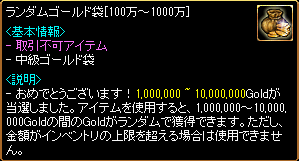 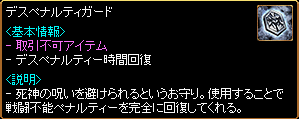 |
||||||||||||||||||||||||||||||||||||
| アーティーの年代記 5巻 | |||||||||||||||||||||||||||||||||||||
|---|---|---|---|---|---|---|---|---|---|---|---|---|---|---|---|---|---|---|---|---|---|---|---|---|---|---|---|---|---|---|---|---|---|---|---|---|---|
小説家アーティーの質問を受けている途中、逃げてしまった。再び質問を受けるために、彼のもとに戻ろう。 小説家アーティーの質問に全部答えた。彼の判定を待った後、もう一度、話しかけてみよう。 |
|||||||||||||||||||||||||||||||||||||
| 受諾場所 | 古都ブルンネンシュティグ 小説家アーティー（64.117） | ||||||||||||||||||||||||||||||||||||
| 受諾条件 | Lv1 メインクエストChapter 5クリア 期間限定 クイズ！メインクエスト（2014年） クイズ！メインクエスト（2015年） |
||||||||||||||||||||||||||||||||||||
| 報酬 | わくわくBOX 古代竜の心臓5個 ランダムゴールド袋[100万〜1000万] レインボーコア デスペナルティガード 天上の鉄床[取引不可] |
||||||||||||||||||||||||||||||||||||
| 古都ブルンネンシュティグ | 問題A,Bのうちどちらかランダムで出題される。全問正解するとクリア。 間違えた場合は、再度受け直すことができる。 小説家アーティーへ
 |
||||||||||||||||||||||||||||||||||||
| 13周年デイリークエスト | |
|---|---|
RED STONE13周年を記念して開催されるデイリーイベントクエスト。モンスターを討伐して「13thデイリーBox」を獲得しよう。 自分のレベルとレベル100以上差のないモンスターを100体討伐しなければいけない。 モンスターを100体討伐した。アラータの所に戻って、報酬を受け取ろう。 |
|
| 受諾場所 | 古都ブルンネンシュティグ アラータ（84.119） |
| 受諾条件 | Lv1 期間限定 1日1回繰り返し可 アラータからの挑戦 |
| 報酬 | 13thデイリーBox |
| 古都ブルンネンシュティグ | 本体Lv±100以下のモンスターを100匹倒す アラータへ |

| 鼠退治 | |
|---|---|
アリアン地下の鼠を退治し、その証拠として鼠の尻尾を集めてマッケインの所へ戻ろう。 |
|
| 受諾場所 | 大富豪の倉庫 マッケイン（21.28） |
| 受諾条件 | Lv1〜50 繰り返し可 |
| 報酬 | 尻尾1個につき経験値150 30G |
| アリアン遺跡 Ｂ１ | ラットマン（Lv30）を倒す、尻尾は重ね置き20個 |
| 大富豪の倉庫 | マッケインへ |
| 訳ありなハンカチ | ||||||||||||||||||||||||||||||||||||||||||||||||||||||||||||||||||||||||||||||||||||||||
|---|---|---|---|---|---|---|---|---|---|---|---|---|---|---|---|---|---|---|---|---|---|---|---|---|---|---|---|---|---|---|---|---|---|---|---|---|---|---|---|---|---|---|---|---|---|---|---|---|---|---|---|---|---|---|---|---|---|---|---|---|---|---|---|---|---|---|---|---|---|---|---|---|---|---|---|---|---|---|---|---|---|---|---|---|---|---|---|---|
ハンカチの持ち主を探そう。 詳細情報はハンカチを調べてみれば分かる。 |
||||||||||||||||||||||||||||||||||||||||||||||||||||||||||||||||||||||||||||||||||||||||
| 受諾場所 | 地下水路 Ｂ１ | |||||||||||||||||||||||||||||||||||||||||||||||||||||||||||||||||||||||||||||||||||||||
| 受諾条件 | Lv1〜100 繰り返し可 | |||||||||||||||||||||||||||||||||||||||||||||||||||||||||||||||||||||||||||||||||||||||
| 報酬 | 選択肢による | |||||||||||||||||||||||||||||||||||||||||||||||||||||||||||||||||||||||||||||||||||||||
| 地下水路 Ｂ１ | 連作クエスト 訳ありなハンカチ → エルデンの好奇心 エルデンの復讐の対象 エルデンの復讐の仕方 モルモット（Lv20）を倒すと、ハンカチがドロップしてクエスト受諾 |
|||||||||||||||||||||||||||||||||||||||||||||||||||||||||||||||||||||||||||||||||||||||
| ウィザードの研究室 | エルデン（36.84）へ ?ブルンネンシュティグの地下水路で見つけました。 ?道端に落ちていたのを拾っただけです。 ?あなたにこれを渡して代わりの物をもらってと頼まれました。
|
|||||||||||||||||||||||||||||||||||||||||||||||||||||||||||||||||||||||||||||||||||||||
| エルデンの好奇心 | |
|---|---|
オアシス都市アリアンに住んでいるヘリアからヨシュアの最後の足どりを確かめよう。 ブルンネンシュティグでヨシュアの足どりを調べよう。 スマグのエルデンの所へ戻ってヨシュアの行ないを報告しよう。 |
|
| 受諾場所 | ウィザードの研究室 エルデン（36.84） |
| 受諾条件 | Lv1〜100 |
| 報酬 | 経験値4000 3200G |
| オアシス都市アリアン | 連作クエスト 訳ありなハンカチ → エルデンの好奇心 エルデンの復讐の対象 エルデンの復讐の仕方 ヘリア(84.131)へ |
| 古都ブルンネンシュティグ | ケイシー(177.77)へ |
| ウィザードの研究室 | エルデンへ |
| エルデンの復讐の対象 | |
|---|---|
スマグでレッドアイに関する情報を手に入れよう。 スウェブタワーでバーテンが言った、騒ぎを起したと思われる人を探そう。 スマグのエルデンの所へ戻って結果を報告しよう。 ブルンネンシュティグ地下にいるレッドアイ魔法師の悪行が事実か確認し、彼らを阻止しよう。 スマグのエルデンの所へ戻って結果を報告しよう。 |
|
| 受諾場所 | ウィザードの研究室 エルデン（36.84） |
| 受諾条件 | Lv1〜100 |
| 報酬 | 経験値1万2000 7000G |
| グローティング酒場 | 連作クエスト 訳ありなハンカチ → エルデンの好奇心 エルデンの復讐の対象 エルデンの復讐の仕方 バーテンダー（30.16）へ |
| スウェブタワー １６Ｆ | グニオグ（57.43）へ |
| ウィザードの研究室 | エルデンへ |
| 地下水路 Ｂ１ | レッドアイ魔法師（Lv20)を倒す |
| ウィザードの研究室 | エルデンへ |
| エルデンの復讐の仕方 | |
|---|---|
スマグウィザードギルドでプリドリに会おう。 ダイアーウルフの居場所に関するヒントをもらおう。ダイアーウルフの位置に関するヒントはリンケンで得られるという。 ブルンネンシュティグ北東側の草原の、どこか石塔が多い地域で、ダイアーウルフの目を手に入れよう。 ウェテンロード・デフヒルズ東部にあるナクリエマ共和国のウェテンロード守備隊建物付近でエンバームドから霊魂の壺を手にいれよう。 スマグウィザードギルドのプリドリに、集めた材料を全て届けよう。 スマグのエルデンの所へ戻り、プリドリが作ったペンダントを届けよう。 |
|
| 受諾場所 | ウィザードの研究室 エルデン（36.84） |
| 受諾条件 | Lv1〜100 |
| 報酬 | 経験値6万 7000G |
| ウィザードギルド | 連作クエスト 訳ありなハンカチ → エルデンの好奇心 エルデンの復讐の対象 エルデンの復讐の仕方 プリドリ（45.36）へ |
| 砂漠村リンケン | エイオエン（66.42）へ |
| バヘル台地 / エルベルグ山脈西部地域 | ダイアーウルフ（Lv59）を倒す 鉱山町ハノブ←↑←   |
| ウェテンロード / デフヒルズ東部地域 | エンバームド（Lv55）を倒す |
| ウィザードギルド | プリドリへ |
| ウィザードの研究室 | エルデンへ |
| 鉄の補給：強盗団の計画 | |
|---|---|
ブルンネンシュティグとハノブの真ん中に位置した東プラトン街道で、変装したシーフから計画を聞き出そう。 獲得した計画書をブルンネンシュティグのカルテスの所に持っていこう。 カルテスから紹介されたフェルシオンの依頼を解決しよう。 |
|
| 受諾場所 | 古都ブルンネンシュティグ カルテス（121.138） |
| 受諾条件 | Lv5 |
| 報酬 | 経験値1500 5000G |
| 東プラトン街道 / 道の中間地点 | 連作クエスト 鉄の補給：強盗団の計画 → 鉄の補給：暗号解読 → 鉄の補給：軍備 変装したシーフ（Lv20）を倒す |
| 古都ブルンネンシュティグ | カルテスへ フェルシオン（100.70）へ |
| 鉄の補給：暗号解読 | |
|---|---|
中央プラトン街道のグレートフォレスト入口付近にある洞窟でヴァンパイアから暗号を解読できる秘密を手に入れよう。 獲得した暗号解析文をブルンネンシュティグのフェルシオンに届けよう。 フェルシオンから紹介されたリュウィンズの依頼を解決しよう。 |
|
| 受諾場所 | 古都ブルンネンシュティグ フェルシオン（100.70） |
| 受諾条件 | Lv5 |
| 報酬 | 経験値2000 |
| 狼の巣窟 | 連作クエスト 鉄の補給：強盗団の計画 → 鉄の補給：暗号解読 → 鉄の補給：軍備 ヴァンパイア（Lv25）を倒す |
| 古都ブルンネンシュティグ | フェルシオンへ リュウィンズ（194.102）へ |
| パスィバルの指輪 | |
|---|---|
ブルンネンシュティグ南の沼地洞窟で指輪の材料となる、リザードマンの硬い皮を手に入れよう。 集めた材料をブルンネンシュティグのパスィバルに届けよう。 |
|
| 受諾場所 | 古都ブルンネンシュティグ パスィバル（34.134） |
| 受諾条件 | Lv5〜50 繰り返し可 |
| 報酬 | 経験値2300 防御力効率Lv1レザーリング |
| ギルディル川 沼地洞窟 Ｂ１ | リザードマン（Lv19）を倒す |
| 古都ブルンネンシュティグ | パスィバルへ ?もちろんです。 を選択すると、Lv51以上でも繰り返し可能。 Lv51以上で一度でもキャンセルすると、二度と受けられない。  |
| 冒険家の心得 | |
|---|---|
次のすべての称号を獲得して、冒険家協会ブルンネンシュティグ本部の協会長シュルトに会ってみよう。 銀行顧客 Lv1 - ブルンネンシュティグ銀行（クレナ） ポーター Lv1 - ブルンネンシュティグ銀行（クロウン） 取引人 Lv1 - 港街ブリッジヘッド（露店組合試験官） 地図製作者 Lv1 - 古都ブルンネンシュティグ（コリン） |
|
| 受諾場所 | 冒険家協会ブルンネンシュティグ本部 協会長シュルト（21.17） |
| 受諾条件 | Lv10 |
| 報酬 | 経験値8000 冒険家協会の羅針盤‘ブルンネンシュティグ’10個 |
| 冒険家協会ブルンネンシュティグ本部 | 連作クエスト 冒険家協会 → 冒険家の心得 → 1つ目のテスト → 2つ目のテスト 必要な称号を獲得して、協会長シュルトへ 銀行顧客Lv1 ポーターLv1 取引人Lv1 地図製作者Lv1 |
| ギルドの一員 | |
|---|---|
市民権称号を獲得したら、冒険家協会ブルンネンシュティグ本部のギルド連合代理人に会おう。 市民権 Lv1 - ブルンネンシュティグ銀行（ウードスタック） 市民権を獲得したので、一緒に冒険するギルドを探してみよう。ギルドに加入したら、再びギルド連合代理人に会おう。 必要事項 - ギルド加入 |
|
| 受諾場所 | 冒険家協会ブルンネンシュティグ本部 ギルド連合代理人（9.43） |
| 受諾条件 | Lv10 |
| 報酬 | 経験値4万 |
| 冒険家協会ブルンネンシュティグ本部 | 連作クエスト ギルドの一員 → タティリス遺跡の調査 → 簡単なお使い 市民権Lv1を獲得してギルドに加入し、ギルド連合代理人へ |
| クレンドルの研究 | |
|---|---|
ブルンネンシュティグ南側の沼地洞窟で飛海月(とびクラゲ)のサンプルを手に入れよう。 飛海月(とびクラゲ)のサンプルをブルンネンシュティグのクレンドルに届けよう。 |
|
| 受諾場所 | 古都ブルンネンシュティグ クレンドル（41.159） |
| 受諾条件 | Lv10 |
| 報酬 | 経験値5900 帰還の巻物4個 |
| ギルディル川 沼地洞窟 Ｂ１ | 飛海月（Lv15）を倒す |
| 古都ブルンネンシュティグ | クレンドルへ |
| パトリキー家の依頼 | |
|---|---|
ウェテンロードのケルチ大橋近所で働いているダスティンを見つけて、建築資材と木をもらって来よう。彼はビガプールから出て右側の森で作業をしている。 すべての材料をそろえた。新興王国ビガプールのパトリキー公爵のもとに戻ろう。 |
|
| 受諾場所 | 新興王国ビガプール パトリキー公爵（76.124） |
| 受諾条件 | Lv10 繰り返し可 |
| 報酬 | 経験値1500 1000G |
| ウェテンロード / ケルチ大橋付近 | ダスティン（172.98）へ |
| 新興王国ビガプール | パトリキー公爵へ |
| ミルベル家の依頼 | |
|---|---|
ビガプールの名家、ミルベル家の依頼を受けた。港街シュトラセラトに行ってバフマンに会おう。 台風のせいで品物が到着していない。まずは港街ブリッジヘッドに行ってミヌセンに会い、重要な品物だけでも、もらって来よう。 台風のせいで品物の配送が遅くなるため、まず貴重品だけを先にもらった。新興王国ビガプールのミルベル公爵のもとに戻ろう。 |
|
| 受諾場所 | 新興王国ビガプール ミルベル公爵（10.37） |
| 受諾条件 | Lv10 繰り返し可 |
| 報酬 | 経験値5000 5000G |
| 港街シュトラセラト | バフマン（5.134）へ |
| 港街ブリッジヘッド | ミヌセン（12.106）へ |
| 新興王国ビガプール | ミルベル公爵へ |
| 神父の善行 | |
|---|---|
ビガプールの裏町で配給をもらえない流れ者に食べ物を配ろう。 配給をもらえなかった他の流れ者に食べ物を配ろう。 パンを配った。配給をもらえなかった他の流れ者たちにも食べ物を配ろう。 配給をもらえなかった他の流れ者たちにも食べ物を配ろう。 神父にもらったパンを配給をもらえなかった流れ者にあげた。配給をもらえなかった他の流れ者を捜してみよう。 すべての食べ物を配った。ビガプール教会のブレイグ神父のもとに戻ろう。 |
|
| 受諾場所 | ビガプール教会 ブレイグ神父（9.15） |
| 受諾条件 | Lv10〜30 繰り返し可 |
| 報酬 | 経験値5000 |
| 新興王国ビガプール | 流れ者5人へ、多少移動する ?（116.160）→?（118.162）→?（118.165）→?（160.164）→?（166.165） 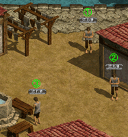   |
| ビガプール教会 | ブレイグ神父へ |
| タティリス遺跡の調査 | |
|---|---|
古代都市タティリス遺跡 入口にいるイディアと共に、古代都市タティリス遺跡 入口を調査してみよう。調査が終わったら、イディアからイディアの確認証を受け取ろう。 必要事項 - イディアと共に‘古代都市タティリス遺跡 入口’調査 必要事項 - 調査完了後、イディアから確認証を受け取る イディアの確認証を受け取った。冒険家協会ブルンネンシュティグ本部のギルド連合代理人のところに戻ろう。 必要事項 - イディアと共に‘古代都市タティリス遺跡 入口’調査（完了） 必要事項 - 調査完了後、イディアから確認証を受け取る（完了） |
|
| 受諾場所 | 冒険家協会ブルンネンシュティグ本部 ギルド連合代理人（9.43） |
| 受諾条件 | Lv10〜100 繰り返し可 |
| 報酬 | LvUPに必要な経験値の約50％ （スフィアの有無に関係なく固定） |
| 古代都市タティリス遺跡 入口 | 連作クエスト ギルドの一員 → タティリス遺跡の調査 → 簡単なお使い ギルドダンジョン古代都市タティリス遺跡 入口をクリアし、イディアへ |
| 冒険家協会ブルンネンシュティグ本部 | ギルド連合代理人へ 簡単なお使い未済の場合のみ、ここで選択肢 ?はい。分かりました。 → 簡単なお使い ?今は、ちょっと忙しいです。 → 終了 ?を選択した場合でも、再度タティリス遺跡の調査をクリア後、再選択できる。 |
| 簡単なお使い | |
|---|---|
遺跡発掘品の配達袋を冒険家協会ブルンネンシュティグ本部にいるギルド広報官に渡そう。 ギルド広報官から、遺跡発掘品の配達袋の中に入っている小包を古都ブルンネンシュティグにいる武器職人タポ、武器職人サナ、ランディスに渡してくれと頼まれた。まずは、武器職人タポに小包を渡そう。 古都ブルンネンシュティグ - [武器職人タポ]に小包配達 ギルド広報官から、遺跡発掘品の配達袋の中に入っている小包を古都ブルンネンシュティグにいる武器職人タポ、武器職人サナ、ランディスに渡してくれと頼まれた。次は、武器職人サナに小包を渡そう。 古都ブルンネンシュティグ - [武器職人タポ]に小包配達（完了） 古都ブルンネンシュティグ - [武器職人サナ]に小包配達 ギルド広報官から、遺跡発掘品の配達袋の中に入っている小包を古都ブルンネンシュティグにいる武器職人タポ、武器職人サナ、ランディスに渡してくれと頼まれた。最後に、ランディスに小包を渡そう。 古都ブルンネンシュティグ - [武器職人タポ]に小包配達（完了） 古都ブルンネンシュティグ - [武器職人サナ]に小包配達（完了） 古都ブルンネンシュティグ - [ランディス]に小包配達 すべての小包を配達した。冒険家協会ブルンネンシュティグ本部にいるギルド広報官のところに戻って報告しよう。 古都ブルンネンシュティグ - [武器職人タポ]に小包配達（完了） 古都ブルンネンシュティグ - [武器職人サナ]に小包配達（完了） 古都ブルンネンシュティグ - [ランディス]に小包配達（完了） |
|
| 受諾場所 | 冒険家協会ブルンネンシュティグ本部 ギルド連合代理人（9.43） |
| 受諾条件 | Lv10〜100 |
| 報酬 | 経験値12万 |
| 冒険家協会ブルンネンシュティグ本部 | 連作クエスト ギルドの一員 → タティリス遺跡の調査 → 簡単なお使い ギルド広報官（16.55）へ |
| 古都ブルンネンシュティグ | 武器職人タポ（100.51）へ 武器職人サナ（98.53）へ ランディス（110.58）へ、幸運度テストを1回無料で受けられる |
| 冒険家協会ブルンネンシュティグ本部 | ギルド広報官へ |
| フラムベルを探して | |
|---|---|
ハノブ高台望楼ダンジョンで、セルファンの義兄弟フラムベルの行方について調べよう。 見つけ出したフラムベルの日誌をハノブのセルファンに届けよう。 |
|
| 受諾場所 | 鉱山町ハノブ セルファン（64.68） |
| 受諾条件 | Lv15 |
| 報酬 | 経験値1万4000 帰還の巻物4個 |
| ハノブ高台望楼 １Ｆ | 斧槍兵（Lv32）を倒す |
| 鉱山町ハノブ | セルファンへ |
| ビガプールの歴史 | |||||||||||||||||||
|---|---|---|---|---|---|---|---|---|---|---|---|---|---|---|---|---|---|---|---|
ビガプールの歴史に詳しい歴史学者ウォルドに会い、ビガプールの歴史について調べてみよう。 ウォルドのテストが始まった。結果が良ければ報酬も大きい。最善をつくそう。 ウォルドの採点が始まった。ちょっと待ってから話かけてみよう。 |
|||||||||||||||||||
| 受諾場所 | 新興王国ビガプール リエンモリ（87.73） | ||||||||||||||||||
| 受諾条件 | Lv15 | ||||||||||||||||||
| 報酬 | 5問正解 経験値4万 4問正解 経験値2万5000 3問正解 経験値2万 2問正解 経験値5000 0〜1問正解 経験値2000 |
||||||||||||||||||
| 小都市ビッグアイ | ウォルド(17.54)へ 解答23212 問題の途中で中断すると、クエストがキャンセルされる。
|
||||||||||||||||||
| ストラウス一族の歴史 | |||||||||||||||||||
|---|---|---|---|---|---|---|---|---|---|---|---|---|---|---|---|---|---|---|---|
ハウマンからストラウス家とビガプールの歴史の説明を聞こう。 ハウマンが出すクイズを当てよう。 もうすぐハウマンが結果を発表するから、ちょっと待ってから話しかけてみよう。 ハウマンは、何か別のことで頼み事があるようだ。また話をしてみよう。 古都ブルンネンシュティグの地下水路を探索し、ハウマンが歴史研究に必要としているシュトラディバリ一族の家紋を探そう。そこに住んでいるモンスターたちを狩って捜索してみよう。 ハウマンが頼んだシュトラディバリ一族の家紋を見つけた。ハウマンの所に戻ろう。 |
|||||||||||||||||||
| 受諾場所 | ビガプール教会 歴史学者ハウマン（9.10） | ||||||||||||||||||
| 受諾条件 | Lv15 | ||||||||||||||||||
| 報酬 | ? 0〜3問正解 経験値500 ? 4〜5問正解 ?経験値7500 2000G ? 4〜5問正解 ?なし ? クイズ拒否 経験値1000 |
||||||||||||||||||
| ビガプール教会 | ?面白そうですね。お手柔らかにお願いしますよ。 → クイズ開始 選択肢31422 ?いいえ。教えていただいた歴史で十分です。 → 終了 （経験値1000）
0〜3問正解の場合は、終了 （経験値500） 4〜5問正解の場合は、 ?はい。お手伝いします。 → クエスト継続 ?申し訳ないですが、お手伝いすることができないです。 → 終了 （報酬なし） |
||||||||||||||||||
| 地下水路 Ｂ１ | ?はい。お手伝いします。 を選択した場合の続き モンスター（Lv50）を倒す、どれでも可 |
||||||||||||||||||
| ビガプール教会 | 歴史学者ハウマンへ （経験値7500 2000G） | ||||||||||||||||||
| 鉄鱗生物に関する噂 | |
|---|---|
ブルンネンシュティグ南側の洞窟に生息するメロウからうろこを手に入れよう。 手に入れたメロウの硬い鱗をブルンネンシュティグのリファシェランに届けよう。 ブルンネンシュティグ東方面でスパイクワームの触手を手に入れよう。 手に入れたスパイクワームの触手をブルンネンシュティグのリファシェランに届けよう。 |
|
| 受諾場所 | 古都ブルンネンシュティグ リファシェラン（170.167） |
| 受諾条件 | Lv20 |
| 報酬 | 経験値2万6000 魔具入手Lv1（5％）鱗グローブ |
| ギルディル川 沼地洞窟 Ｂ２ | メロウ（Lv30)を倒す |
| 古都ブルンネンシュティグ | リファシェランへ |
| 東プラトン街道 / イースタンブリッジ付近 | スパイクワーム（Lv15)を倒す |
| 古都ブルンネンシュティグ | リファシェランへ |
| プレシャンとチンピラ | |
|---|---|
バヘル台地付近の丸太いかだ丘の木こり達を調べてこよう。 バヘル台地付近の丸太いかだ丘にある積み場にプレシャンがいるという。プレシャンを倒そう。 ブルンネンシュティグのバルドゥルにプレシャンが持っていた書類を見せてあげよう。 |
|
| 受諾場所 | 古都ブルンネンシュティグ バルドゥル（169.25） |
| 受諾条件 | Lv20 |
| 報酬 | 経験値2万6000 最大HPLv6（+30）鉄の帽子 |
| バヘル台地 / 丸太いかだ丘 | チェインシャ（10.80）へ プレシャン（Lv30)を倒す |
| 古都ブルンネンシュティグ | バルドゥルへ |
| 中途半端な探検家 | |
|---|---|
リンケン東の砂漠で枯れ果てたミイラの包帯を集めてリンケンのダニアンに届けよう。 |
|
| 受諾場所 | 砂漠村リンケン ダニアン（76.74） |
| 受諾条件 | Lv20〜60 |
| 報酬 | 経験値3万5000 エンチャント文書セット |
| 西プラトン街道 / グレートフォレスト入口 | ドライミイラ（Lv40）を倒す |
| 砂漠村リンケン | ダニアンへ ミイラの包帯は複数所持でき、1個ずつ当たりが判定される。  |
| 鉄の補給：軍備 | |
|---|---|
ブルンネンシュティグ北側の北、東バヘル大河交差地点付近の洞窟でキングクラブの殻を手に入れよう。 集めたキングクラブの殻をブルンネンシュティグのリュウィンズに届けよう。 |
|
| 受諾場所 | 古都ブルンネンシュティグ リュウィンズ（194.102） |
| 受諾条件 | Lv25 |
| 報酬 | 経験値4万5000 17万G |
| 蟲の洞穴 | 連作クエスト 鉄の補給：強盗団の計画 → 鉄の補給：暗号解読 → 鉄の補給：軍備 キングクラブ（Lv33）を倒す |
| 古都ブルンネンシュティグ | リュウィンズへ |
| 補給品運送 | |
|---|---|
リンケン南東側のナクリエマ共和国ウェテンロード守備隊のキャンプにいるセニスに補給品を届けよう。 ブルンネンシュティグ北東側の深く、石塔が多い地域にある正体不明の狼の肉を集めよう。 ナクリエマ共和国のウェテンロード守備隊のキャンプにいるセニスの所へ戻ろう。 リンケンのエイオエンに肉を届けよう。 |
|
| 受諾場所 | 砂漠村リンケン エイオエン（66.42） |
| 受諾条件 | Lv25 |
| 報酬 | 経験値4万5000 8万G |
| ウェテンロード / デフヒルズ東部地域 | セニス（128.120）へ |
| バヘル台地 / エルベルグ山脈西部地域 | ダイアーウルフ（Lv59）を倒す 鉱山町ハノブ←↑← |
| ウェテンロード / デフヒルズ東部地域 | セニスへ |
| 砂漠村リンケン | エイオエンへ |
| 解毒剤 | |
|---|---|
ブルンネンシュティグの流れ者から解毒剤を作る為に毒のサンプル採取を依頼された。オート地下監獄のインベノムテールからサンプルを手に入れよう。 インベノムテールから手に入れた毒袋をブルンネンシュティグの流れ者に届けよう。 |
|
| 受諾場所 | 古都ブルンネンシュティグ 流れ者（153.122） |
| 受諾条件 | Lv30 |
| 報酬 | 経験値6万8000 スカルリング（ランダム補正） |
| オート地下監獄 Ｂ２ | インベノムテール（Lv41)を倒す |
| 古都ブルンネンシュティグ | 流れ者へ |
| 野良犬の牙 | |
|---|---|
バヘル大河 / 東バヘル川で野良犬の牙15個を集めよう。野良犬は群れを成しているので注意すること。 野良犬の牙15個をハノブのフリーマンに届けよう。 |
|
| 受諾場所 | 鉱山町ハノブ フリーマン（79.86） |
| 受諾条件 | Lv30 |
| 報酬 | 経験値6万8000 |
| バヘル大河 / 東バヘル川 | 野良犬（Lv40）を倒す |
| 鉱山町ハノブ | フリーマンへ |
| アリストイ家の依頼 | |
|---|---|
港街シュトラセラトに移動してセマドック船員に会って、アリストイ公爵が頼んだ品物をもらおう。ただし、途中でいやになったらアリストイ公爵に話そう。 セマドックから品物をもらった。品物を新興王国ビガプールの貴族アリストイ公爵に渡そう。 アリストイ家から王にささげる絶対権力の剣を大将軍ブレートに渡そう。ただし、途中でいやになったらアリストイ公爵に話そう。 頼まれた品物を渡した。アリストイ公爵のもとに戻って報告しよう。 |
|
| 受諾場所 | 新興王国ビガプール アリストイ公爵（140.85） |
| 受諾条件 | Lv30 キャンセル不可 |
| 報酬 | 経験値3万 2万5000G |
| 港街シュトラセラト | クエスト欄からのキャンセル不可。アリストイ公爵に話すと途中でキャンセルできる。 セマドック（149.131）へ |
| 新興王国ビガプール | アリストイ公爵へ 大将軍ブレート（150.30）へ アリストイ公爵へ |
| 王権強化 | |
|---|---|
ビガプールの大将軍ブレート公爵からビガプール中の貴族の内、公爵の爵位を持っている家門にメッセージを伝える任務を付与された。先にトルゲレフ公爵に国王のメッセージを伝えよう。任務遂行が途中で難しくなったら大将軍ブレートのもとに戻って任務を取り消そう。 ミルベル公爵に国王のメッセージを伝えよう。任務遂行が途中で難しくなったら大将軍ブレートのもとに戻って任務を取り消そう。 ブルボン公爵に国王のメッセージを伝えよう。任務遂行が途中で難しくなったら大将軍ブレートのもとに戻って任務を取り消そう。 パトリキー公爵に国王のメッセージを伝えよう。任務遂行が途中で難しくなったら大将軍ブレートのもとに戻って任務を取り消そう。 アリストイ公爵に国王のメッセージを伝えよう。任務遂行が途中で難しくなったら大将軍ブレートのもとに戻って任務を取り消そう。 大将軍ブレートに、ビガプール公爵達から受け取った品を渡そう。 |
|
| 受諾場所 | 新興王国ビガプール 大将軍ブレート（150.30） |
| 受諾条件 | Lv30 キャンセル不可 |
| 報酬 | ? 経験値1万2000 1万1000G ? 経験値7000 1万2000G |
| 新興王国ビガプール | クエスト欄からのキャンセル不可。大将軍ブレートに話すと途中でキャンセルできる。 トルゲレフ公爵（112.33）へ （500G） ミルベル公爵（10.37）へ （500G） ブルボン公爵（123.159）へ ここでの選択によって、パトリキー公爵とアリストイ公爵での報酬が変わる。 ?1万ゴールドを寄付する。 → 1万G払う ?寄付しない。 パトリキー公爵（76.124）へ （?経験値2000 1万G ?5000G） アリストイ公爵（140.85）へ （?経験値3000 5000G ?1000G） 大将軍ブレートへ （経験値7000 5000G） |
| 1つ目のテスト | |
|---|---|
協会長シュルトは、1つ目のテストを行うために、まず協力してくれる仲間たちを集めろという。1つ目のテストのために協力してくれるパーティーメンバーを集めたら、テストを受けよう。 ケイケラスとの戦いに勝利した。協会長シュルトのところに戻って報告しよう。 ケイケラス退治（完了） |
|
| 受諾場所 | 冒険家協会ブルンネンシュティグ本部 協会長シュルト（21.17） |
| 受諾条件 | Lv30〜99 キャンセル不可 |
| 報酬 | 経験値24万 旅立ちセット |
| 冒険家協会ブルンネンシュティグ本部 | 連作クエスト 冒険家協会 → 冒険家の心得 → 1つ目のテスト → 2つ目のテスト クエスト進行できるのはリーダーのみ。 Lv30〜99のメンバーでパーティーを組み協会長シュルトへ、ワープ |
| 冒険家協会 冒険家訓練所 | ケイケラス（Lv45)を倒す ゼノン（37.89）へ、ワープ |
| 冒険家協会ブルンネンシュティグ本部 | 協会長シュルトへ 旅立ちセットは装備する前から取引不可、銀行保管は可。 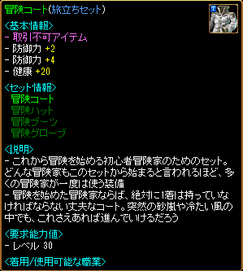  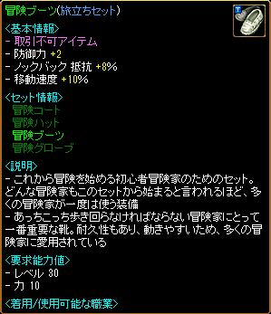  |
| 2つ目のテスト | |
|---|---|
2つ目のテストの課題である秘密ダンジョンを探検するためには、まず情報が必要だ。古都ブルンネンシュティグの噴水広場の右の方にいるジョン・マルコを訪ねて秘密ダンジョンに関する情報を手に入れよう。 ジョン・マルコ - 古都ブルンネンシュティグ（69,157） レベルに合う秘密ダンジョンの探検が完了したら、協会長シュルトのところに戻ろう。（毎日、0：00を過ぎると秘密ダンジョンの入場情報がリセットされてしまうので、秘密ダンジョンの探検が終わったら、入場情報がリセットされる前に協会長シュルトのところに行こう。） 任務目標 - レベルに合う秘密ダンジョン探検 職業に合ったスキルマスター称号を獲得したら、協会長シュルトのところに戻ろう。 任務目標 - スキルマスター称号を獲得 自分の能力と技を組み直す準備が終わったら、協会長シュルトに声をかけよう。 追加報酬：スキル＆ステータス再配分 |
|
| 受諾場所 | 冒険家協会ブルンネンシュティグ本部 協会長シュルト（21.17） |
| 受諾条件 | Lv30〜100 キャンセル不可 |
| 報酬 | 経験値180万 スキル＆ステータス再配分 |
| 古都ブルンネンシュティグ | 連作クエスト 冒険家協会 → 冒険家の心得 → 1つ目のテスト → 2つ目のテスト ジョン・マルコ（59.168）へ |
| 冒険家協会ブルンネンシュティグ本部 | 秘密ダンジョンを探索し、協会長シュルトへ スキルマスター称号を獲得し、協会長シュルトへ 協会長シュルトへ スキル＆ステータスを再配分できるのはLv100まで。 |
| 炎の悪魔 | |
|---|---|
オート地下監獄にRED STONEを持つ悪魔がいるという噂の真相を確かめよう。 獲得した火袋をブルンネンシュティグのネスフェリンに証拠として渡してあげよう。 |
|
| 受諾場所 | 古都ブルンネンシュティグ ネスフェリン（151.160） |
| 受諾条件 | Lv35 |
| 報酬 | 経験値9万9000 |
| オート地下監獄 Ｂ２ | フーフー（Lv37）を倒す |
| 古都ブルンネンシュティグ | ネスフェリンへ |
| 紋章の欠片の回収 | |||||||||||||||||||||||||||
|---|---|---|---|---|---|---|---|---|---|---|---|---|---|---|---|---|---|---|---|---|---|---|---|---|---|---|---|
中央プラトン街道のグレートフォレスト入り口付近にいるシーフから情報を聞き出そう。 東プラトン街道の中間地点に位置している路上強盗アジト付近のシーフから情報を聞き出そう。 怪しげな粉を持ってアリアン傭兵ギルドにいるカペドの所へ戻ろう。 鉄の道 / アウグスタ入口付近にいるシーフから情報を聞き出そう。 木の欠片を持ってアリアン傭兵ギルドにいるカペドの所へ戻ろう。 大きな町バリアートの酒場でよく見かけるクンタを探そう。 |
|||||||||||||||||||||||||||
| 受諾場所 | アリアン傭兵ギルド カペド（27.33） | ||||||||||||||||||||||||||
| 受諾条件 | Lv35 | ||||||||||||||||||||||||||
| 報酬 | 経験値9万900 ランダムオプションアイテム2個 | ||||||||||||||||||||||||||
| 中央プラトン街道 / グレートフォレスト入口付近 | シーフ（Lv10）を倒す | ||||||||||||||||||||||||||
| 東プラトン街道 / 道の中間地点 | シーフ（Lv18）を倒す | ||||||||||||||||||||||||||
| アリアン傭兵ギルド | カペドへ | ||||||||||||||||||||||||||
| 鉄の道 / アウグスタ入口付近 | シーフ（Lv54)を倒す | ||||||||||||||||||||||||||
| アリアン傭兵ギルド | カペドへ | ||||||||||||||||||||||||||
| バリアート酒場 | クンタ（14.13）へ
|
||||||||||||||||||||||||||
| テインの探索 | |
|---|---|
北、東バヘル川交差地点の北東の方で発見されたオーガの巣窟へ冒険に出たテインの行方を探そう。 見つけたカバンをブルンネンシュティグのミカに見せよう。 再びオーガの巣窟へ行き、テインが生きているという証拠を探してみよう。 見つけた日記をブルンネンシュティグのミカに見せよう。 |
|
| 受諾場所 | 古都ブルンネンシュティグ ミカ（144.130） |
| 受諾条件 | Lv40 |
| 報酬 | 経験値23万 |
| オーガの巣窟 Ｂ１ | 洞窟スコーピオン（Lv64）を倒す |
| 古都ブルンネンシュティグ | ミカへ |
| オーガの巣窟 Ｂ２ | オーガオーディタ（Lv70）を倒す |
| 古都ブルンネンシュティグ | ミカへ |
| 伝説を求めて | |
|---|---|
キャンサー気孔ダンジョン地下１階で、伝説の生物とされる生物のサンプルを手に入れよう。 集めたサンプルをハノブのハヌスィムに届けよう。 |
|
| 受諾場所 | 鉱山町ハノブ ハヌスィム（62.40） |
| 受諾条件 | Lv40 |
| 報酬 | 経験値13万 決定打抵抗（34％）ブレストプレート |
| キャンサー気孔 Ｂ１ | リザードキリング（Lv55）を倒す |
| 鉱山町ハノブ | ハヌスィムへ |
| 苗木を取り戻せ | |
|---|---|
ブレンティル北東の材木伐採場で木型のモンスターたちから苗木を集めてブレンティル旅館のジェリアースの所へ戻ろう。 苗木を集めた。ブレンティル旅館のジェリアースの所へ戻ろう。 |
|
| 受諾場所 | ブレンティル旅館 ジェリアース（26.14） |
| 受諾条件 | Lv40 |
| 報酬 | 経験値13万 |
| 伐木場 | ティンバーマン（Lv70)、トレント（Lv72)、トランクマン（Lv75)、エンティング（Lv64)を倒す |
| ブレンティル旅館 | ジェリアースへ |
| 彼女のために | |
|---|---|
ビガプールの中央付近にいるセリアと話し合おう。 港街シュトラセラトの銀行に行ってニスケリアから情報を得よう。 港街ブリッジヘッドでクラウドと話そう。彼の家は、街の中心部の住宅地域にあると言う。 ビッグアイにいるビクトリアに今までの話をしよう。 |
|
| 受諾場所 | 小都市ビッグアイ ビクトリア（36.77） |
| 受諾条件 | Lv40 |
| 報酬 | 経験値1万5000 |
| 新興王国ビガプール | セリア（81.98）へ |
| シュトラセラト銀行 | ニスケリア（23.15）へ |
| 港街ブリッジヘッド | クラウド（70.61）へ |
| 小都市ビッグアイ | ビクトリアへ |
| 兄弟 | |
|---|---|
ビガプールの西門近所で働いているケイにアイスウエアを渡そう。 アイスウエアを持って再びミヌエルのもとに戻ろう。 ビガプール銀行にいるセルダンを訪ねよう。 ビッグアイにいるミヌエルにミヌエルの貯金通帳を渡そう。 |
|
| 受諾場所 | 小都市ビッグアイ ミヌエル（37.65） |
| 受諾条件 | Lv40 |
| 報酬 | 経験値1万4000 |
| 新興王国ビガプール | ケイ（5.52）へ |
| 小都市ビッグアイ | ミヌエルへ |
| ビガプール銀行 | セルダン（7.10）へ |
| 小都市ビッグアイ | ミヌエルへ |
| 老兵の回想 | |
|---|---|
砂漠村リンケンで、フランコに関する情報を得るために村人々と話し合ってみよう。 砂漠村リンケンで、フランコを捜して彼と話そう。彼は湖近くの静かな場所で余生を過ごしているという。 ビッグアイに帰ってブルナークに、フランコに関する話を聞かせよう。 港街シュトラセラトに行ってトランキーを探そう。彼は街の南部海岸で雑用をしていると言う。 再び、ビッグアイに戻ってブルナークに報告しよう。 |
|
| 受諾場所 | 小都市ビッグアイ ブルナーク（29.49） |
| 受諾条件 | Lv40 |
| 報酬 | 経験値1万5000 |
| 砂漠村リンケン | 村人4人へ 青年（67.60） 婦人（50.53） ちびっこ（26.37） おじいさん（16.39） フランコ（15.65）へ |
| 小都市ビッグアイ | ブルナークへ |
| 港街シュトラセラト | トランキー（105.138）へ |
| 小都市ビッグアイ | ブルナークへ |
| 後任兵の復讐 | |
|---|---|
ビガプール旅館のホープナスのところに行って、強いお酒を手に入れよう。 ホープナスからもらった強いお酒をジャックペリーに渡そう。 訓練隊長トレースに告げ口メモをそっと渡そう。 ジャックペリーに最後の報告をしよう。 |
|
| 受諾場所 | 小都市ビッグアイ ジャックペリー（93.31） |
| 受諾条件 | Lv40 |
| 報酬 | 経験値1万4000 |
| 冒険家協会ビガプール支部 / 黄金色の小麦畑亭 | ホープナス（11.24）へ |
| 小都市ビッグアイ | ジャックペリーへ 訓練隊長トレース（90.51）へ ジャックペリーへ |
| 白衣の天使 | |
|---|---|
病床にいる患者たちと話し合ってみよう。 患者全員の面倒をみた。再びアベイルに声を掛けてみよう。 ビガプールの旅館周辺にいるアルフレードに会おう。 再びアベイルのもとに戻り、医療機器の箱を渡そう。 |
|
| 受諾場所 | 小都市ビッグアイ応急治療室 アベイル（17.13） |
| 受諾条件 | Lv40 繰り返し可 |
| 報酬 | 経験値2000 |
| 小都市ビッグアイ応急治療室 | 患者4人へ （7.9）→（9.5）→（10.13）→（13.11） アベイルへ |
| 新興王国ビガプール | アルフレード（23.26）へ |
| 小都市ビッグアイ応急治療室 | アベイルへ |
| 冒険家アベル | |
|---|---|
冒険家アベルがグレートフォレストで行方不明になったらしい。グレートフォレストを探検し、アベルの痕跡を見つけよう。 冒険家アベルは当分戻る気はないらしい。ティアラに自分のバンダナを届けて欲しいと言われた。ティアラの所に戻ろう。 ティアラに頼まれてアベルに手紙とキャンディーを届けよう。 |
|
| 受諾場所 | 古都ブルンネンシュティグ ティアラ（16.83） |
| 受諾条件 | Lv45 |
| 報酬 | 経験値18万 帰還の巻物 移動速度Lv2鱗シューズ |
| グレートフォレスト / プラトン街道 | アベル（402,45）へ 行き方の詳細は ⇒ グレートフォレスト / プラトン街道 |
| 古都ブルンネンシュティグ | ティアラへ |
| グレートフォレスト / プラトン街道 | アベルへ |
| おかしな軍人魂 | |
|---|---|
ビガプールのラプレンにゲリングスのラブレターを渡そう。彼女は水が流れる所の木の下で、よく休むと言う。 ビッグアイに帰ってゲリングスにラプレンの話をしよう。 ビガプールにいるラプレンにバラの花束を渡そう。 再びビッグアイに戻り、ゲリングスにラプレンの話を聞かせよう。 |
|
| 受諾場所 | 小都市ビッグアイ ゲリングス（29.78） |
| 受諾条件 | Lv45 繰り返し可 |
| 報酬 | 経験値2500 |
| 新興王国ビガプール | ラプレン（65.68）へ |
| 小都市ビッグアイ | ゲリングスへ |
| 新興王国ビガプール | ラプレンへ |
| 小都市ビッグアイ | ゲリングスへ |
| さびしい魂 | |
|---|---|
ビガプールにいる占術師ペイルンに会おう。彼女は南部住宅地域の辺りで占い師をしているという。 再びプゾルのもとに戻り、占い結果の内容を伝えよう。 プゾルの様子がおかしい。ビッグアイの大将ヘンデルセンにこの事を報告しよう。彼は北東方面の隊長宿舎で仕事をしている。 プゾルが見回りに立っている所の近くにある廃墟を調査してみよう。 再びヘンデルセンの所に行き、遺体を見つけたことを報告しよう。 |
|
| 受諾場所 | 小都市ビッグアイ プゾル（39.21） |
| 受諾条件 | Lv45 |
| 報酬 | 経験値2万 |
| 新興王国ビガプール | ペイルン（59.142）へ |
| 小都市ビッグアイ | プゾルへ ヘンデルセン（94.11）へ 剣（46.3）をクリック  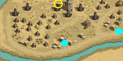 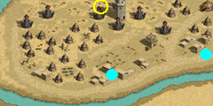ヘンデルセンへ |
| 脱走 | |
|---|---|
港街ブリッジヘッドの南部でマックと話そう。 テンドペンド平原/ブリッジヘッド北部地域に住んでいるビッグクラブを狩って柔らかいカニの肉を10個集めよう。ビッグクラブは北部海岸にだけ棲息していると言う。 マックに柔らかいカニの肉10個を渡そう。 ビッグアイに帰って、リバルドにマックの安否を伝えよう。 |
|
| 受諾場所 | 小都市ビッグアイ リバルド（82.17） |
| 受諾条件 | Lv45 |
| 報酬 | 経験値2万 |
| 港街ブリッジヘッド | マック（46.135）へ |
| テンドペンド平原 / ブリッジヘッド北部地域 | ビッグクラブ（Lv63）を10匹倒す |
| 港街ブリッジヘッド | マックへ |
| 小都市ビッグアイ | リバルドへ |